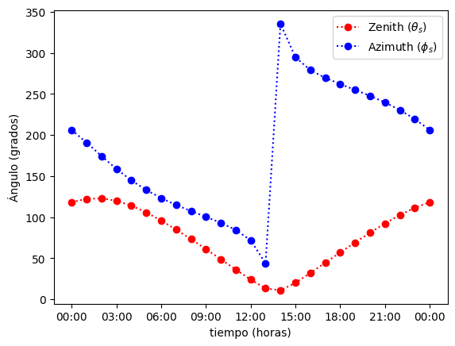
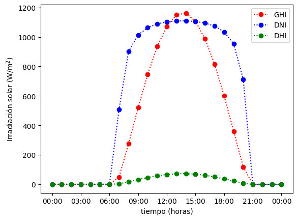
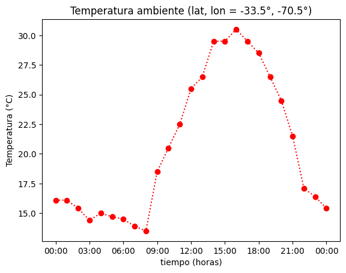

Tutorial 4 - Datos solares y climatológicos#
Este es un tutorial para utilizar las librerías:
pvlibpara determinar ángulos solares y niveles de irradiación solar.meteostatpara determinar condiciones climáticas.
Definir localización y tiempo de estudio#
Antes de cualquier estudio debemos definir la localización y tiempo de estudio.
Latitud, longitud y altitud del sitio#
Como sugerencia, recomendamos usar google earth. para determinar las coordenadas y altitud del sitio. Esta información se encuentra en la esquina inferior derecha. Otra alternativa es revisar las coordenadas en la dirección web del sitio.
Por ejemplo, consideramos las coordenadas del Edificio A del campus de Peñalolén de la Universidad Adolfo Ibañez.
Según esta información, el edificio se encuentre en las coordeandas 33.485° S, 70.518°O, y a una altura de 890.867 m
# !pip install -U meteostat
# Definimos latitud y longitud del lugar
lat, lon = -33.485, -70.518
# Altitud (en metros)
alt = 890.86619233
Zonas horaria#
Para identificar la zona horaria podemos usar la función pytz.country_timezones.
Nota La librería
pytzviene incluída dentro del paquete de instalación depvliby, por lo tanto, no requiere instalación.
import pytz
pytz.country_timezones('CL')
['America/Santiago', 'America/Punta_Arenas', 'Pacific/Easter']
En Chile, la zona horaria es America/Santiago en casi todo el territorio, excepto en Punta Arenas e Isla de Pascua.
tz_uai = 'America/Santiago'
La lista completa de zonas horarias se encuentra disponible en Wikipedia
Otra alternativa es usar la librería timezonefinder para identificar zonas horarias basadas en coordenadas de latitud y longitud.
from timezonefinder import TimezoneFinder
tz_uai = TimezoneFinder().timezone_at(lat=lat, lng=lon)
print('La zona horaria en la UAI es:', tz_uai)
La zona horaria en la UAI es: America/Santiago
Tiempo de estudio#
Una vez definida la ubicación, debemos definir el intervalo de tiempo para nuestro estudio. Las librerías pvlib y meteostat utilizan distintos formatos para definir el intervalo de tiempo. Sin embargo, algo común en ambas es la definición de la fecha de comienzo y termino en formato datetime.
En este tutorial, consideraremos el periodo comprendido entre el 21 y 22 de diciembre del 2022
from datetime import datetime
start_date = datetime(year = 2022, month = 12, day = 21, hour = 0, minute = 0)
end_date = datetime(year = 2022, month = 12, day = 22, hour = 0, minute = 0)
print(start_date)
print(end_date)
2022-12-21 00:00:00
2022-12-22 00:00:00
La frecuencia entre este intervalo será en horas. Sin embargo, la definición de esto es particular para cada librería.
Estimación de ángulos solares e irradiación (pvlib)#
Inicializar localización y tiempo de estudio en pvlib#
Para inicializar la localización usamos la función pvlib.location.Location(). Esta función crea un objeto Location que utilizaremos después para determinar los ángulos solares e irradiación solar.
from pvlib.location import Location
loc_pvlib = Location(latitude = lat,
longitude = lon,
tz = tz_uai,
altitude = alt)
Luego, debemos definir el intervalo de tiempo. Usamos la función data_range de pandas para generar un arreglo con las fechas para la zona horaria correspondiente.
import pandas as pd
time_study = pd.date_range(start = start_date,
end = end_date,
freq = 'H',
tz = tz_uai)
/tmp/ipykernel_26226/3236446658.py:3: FutureWarning: 'H' is deprecated and will be removed in a future version, please use 'h' instead.
time_study = pd.date_range(start = start_date,
Para verificar, usamos print para imprimir cada elemento del arreglo times.
for i in range(len(time_study)):
print(time_study[i])
2022-12-21 00:00:00-03:00
2022-12-21 01:00:00-03:00
2022-12-21 02:00:00-03:00
2022-12-21 03:00:00-03:00
2022-12-21 04:00:00-03:00
2022-12-21 05:00:00-03:00
2022-12-21 06:00:00-03:00
2022-12-21 07:00:00-03:00
2022-12-21 08:00:00-03:00
2022-12-21 09:00:00-03:00
2022-12-21 10:00:00-03:00
2022-12-21 11:00:00-03:00
2022-12-21 12:00:00-03:00
2022-12-21 13:00:00-03:00
2022-12-21 14:00:00-03:00
2022-12-21 15:00:00-03:00
2022-12-21 16:00:00-03:00
2022-12-21 17:00:00-03:00
2022-12-21 18:00:00-03:00
2022-12-21 19:00:00-03:00
2022-12-21 20:00:00-03:00
2022-12-21 21:00:00-03:00
2022-12-21 22:00:00-03:00
2022-12-21 23:00:00-03:00
2022-12-22 00:00:00-03:00
Estimar ángulos solares (get_solarposition)#
Para acceder a los ángulos solares usamos la función get_solarposition del objeto loc_pvlib. Esta función crea un dataframe con los ángulos solares
sol_pos = loc_pvlib.get_solarposition(times = time_study)
sol_pos.head()
| apparent_zenith | zenith | apparent_elevation | elevation | azimuth | equation_of_time | |
|---|---|---|---|---|---|---|
| 2022-12-21 00:00:00-03:00 | 118.310953 | 118.310953 | -28.310953 | -28.310953 | 206.108725 | 2.160758 |
| 2022-12-21 01:00:00-03:00 | 122.292222 | 122.292222 | -32.292222 | -32.292222 | 190.845847 | 2.140015 |
| 2022-12-21 02:00:00-03:00 | 122.881072 | 122.881072 | -32.881072 | -32.881072 | 174.524133 | 2.119271 |
| 2022-12-21 03:00:00-03:00 | 119.976535 | 119.976535 | -29.976535 | -29.976535 | 158.754981 | 2.098524 |
| 2022-12-21 04:00:00-03:00 | 114.043325 | 114.043325 | -24.043325 | -24.043325 | 144.812625 | 2.077775 |
En este curso, solo usaremos:
'apperent_zenith': ángulo cenital solar aparente (con corrección por el índice de refracción)'apperent_elevation': ángulo de elevación solar aparente (con corrección por el índice de refracción)'azimuth': ángulo acimutal solar
import matplotlib.pyplot as plt
import matplotlib.dates as mdates
fig, ax = plt.subplots()
ax.plot(time_study, sol_pos['apparent_zenith'],'o:r', label=r'Zenith ($\theta_s$)')
ax.plot(time_study, sol_pos['azimuth'],'o:b', label=r'Azimuth ($\phi_s$)')
ax.set_xlabel('tiempo (horas)')
ax.xaxis.set_major_formatter(mdates.DateFormatter('%H:%M', tz = tz_uai))
ax.set_ylabel('Ángulo (grados)')
plt.legend()
plt.show()

Estimar irradiación solar (get_clearsky)#
Para acceder a la irradiación solar usamos la función get_clearsky del objeto loc_pvlib. Esta función crea un dataframe con los niveles de irradiación horizontal global (ghi), normal directa (dni) y horizontal difusa (dhi), calculados en base al modelo de Ineichen y Perez (2022).`
sol_irr = loc_pvlib.get_clearsky(times = time_study)
sol_irr.head()
| ghi | dni | dhi | |
|---|---|---|---|
| 2022-12-21 00:00:00-03:00 | 0.0 | 0.0 | 0.0 |
| 2022-12-21 01:00:00-03:00 | 0.0 | 0.0 | 0.0 |
| 2022-12-21 02:00:00-03:00 | 0.0 | 0.0 | 0.0 |
| 2022-12-21 03:00:00-03:00 | 0.0 | 0.0 | 0.0 |
| 2022-12-21 04:00:00-03:00 | 0.0 | 0.0 | 0.0 |
fig, ax = plt.subplots()
ax.plot(time_study, sol_irr['ghi'],'o:r', label=r'GHI')
ax.plot(time_study, sol_irr['dni'],'o:b', label=r'DNI')
ax.plot(time_study, sol_irr['dhi'],'o:g', label=r'DHI')
ax.set_xlabel('tiempo (horas)')
ax.xaxis.set_major_formatter(mdates.DateFormatter('%H:%M', tz = tz_uai))
ax.set_ylabel('Irradiación solar ($\mathrm{W/m^2}$)')
plt.legend()
plt.show()

Estimación de condiciones ambientales (meteostat)#
Inicializar localización y tiempo de estudio en meteostat#
Lo primero que debemos hacer es inicializar la localización usando la función meteostat.Point(). Esta función crea un objeto que generará la información meteorologica a través de la interpolación de datos de estaciones meterológicas cercanas.
import meteostat
loc_meteo = meteostat.Point(lat=lat,
lon=lon,
alt= alt)
Luego, para extraer los datos horarios, utilizamos la función meteostat.Hourly indicando la ubicación del objeto Point, el inicio (start), el término (end) y la zona horaria (timezone) del periodo donde queremos extraer los datos.
La función entregará un objeto, el cual podemos convertir a un dataframe usando
.fetch()
from meteostat import Hourly
# Creamos un objeto con las condiciones climáticas
meteo_data = Hourly(loc = loc_meteo, # localización
start = start_date, # inicio
end = end_date, # término
timezone = tz_uai) # zona horaria
# convertimos a dataframe
meteo_data = meteo_data.fetch()
---------------------------------------------------------------------------
gaierror Traceback (most recent call last)
File ~/miniconda3/lib/python3.11/urllib/request.py:1348, in AbstractHTTPHandler.do_open(self, http_class, req, **http_conn_args)
1347 try:
-> 1348 h.request(req.get_method(), req.selector, req.data, headers,
1349 encode_chunked=req.has_header('Transfer-encoding'))
1350 except OSError as err: # timeout error
File ~/miniconda3/lib/python3.11/http/client.py:1286, in HTTPConnection.request(self, method, url, body, headers, encode_chunked)
1285 """Send a complete request to the server."""
-> 1286 self._send_request(method, url, body, headers, encode_chunked)
File ~/miniconda3/lib/python3.11/http/client.py:1332, in HTTPConnection._send_request(self, method, url, body, headers, encode_chunked)
1331 body = _encode(body, 'body')
-> 1332 self.endheaders(body, encode_chunked=encode_chunked)
File ~/miniconda3/lib/python3.11/http/client.py:1281, in HTTPConnection.endheaders(self, message_body, encode_chunked)
1280 raise CannotSendHeader()
-> 1281 self._send_output(message_body, encode_chunked=encode_chunked)
File ~/miniconda3/lib/python3.11/http/client.py:1041, in HTTPConnection._send_output(self, message_body, encode_chunked)
1040 del self._buffer[:]
-> 1041 self.send(msg)
1043 if message_body is not None:
1044
1045 # create a consistent interface to message_body
File ~/miniconda3/lib/python3.11/http/client.py:979, in HTTPConnection.send(self, data)
978 if self.auto_open:
--> 979 self.connect()
980 else:
File ~/miniconda3/lib/python3.11/http/client.py:1451, in HTTPSConnection.connect(self)
1449 "Connect to a host on a given (SSL) port."
-> 1451 super().connect()
1453 if self._tunnel_host:
File ~/miniconda3/lib/python3.11/http/client.py:945, in HTTPConnection.connect(self)
944 sys.audit("http.client.connect", self, self.host, self.port)
--> 945 self.sock = self._create_connection(
946 (self.host,self.port), self.timeout, self.source_address)
947 # Might fail in OSs that don't implement TCP_NODELAY
File ~/miniconda3/lib/python3.11/socket.py:827, in create_connection(address, timeout, source_address, all_errors)
826 exceptions = []
--> 827 for res in getaddrinfo(host, port, 0, SOCK_STREAM):
828 af, socktype, proto, canonname, sa = res
File ~/miniconda3/lib/python3.11/socket.py:962, in getaddrinfo(host, port, family, type, proto, flags)
961 addrlist = []
--> 962 for res in _socket.getaddrinfo(host, port, family, type, proto, flags):
963 af, socktype, proto, canonname, sa = res
gaierror: [Errno -3] Temporary failure in name resolution
During handling of the above exception, another exception occurred:
URLError Traceback (most recent call last)
Cell In[16], line 4
1 from meteostat import Hourly
3 # Creamos un objeto con las condiciones climáticas
----> 4 meteo_data = Hourly(loc = loc_meteo, # localización
5 start = start_date, # inicio
6 end = end_date, # término
7 timezone = tz_uai) # zona horaria
9 # convertimos a dataframe
10 meteo_data = meteo_data.fetch()
File ~/miniconda3/lib/python3.11/site-packages/meteostat/interface/hourly.py:146, in Hourly.__init__(self, loc, start, end, timezone, model, flags)
143 self._set_time(start, end, timezone)
145 # Initialize time series
--> 146 self._init_time_series(loc, start, end, model, flags)
File ~/miniconda3/lib/python3.11/site-packages/meteostat/interface/timeseries.py:156, in TimeSeries._init_time_series(self, loc, start, end, model, flags)
154 self._stations = loc.index
155 elif isinstance(loc, Point):
--> 156 stations = loc.get_stations("daily", start, end, model)
157 self._stations = stations.index
158 else:
File ~/miniconda3/lib/python3.11/site-packages/meteostat/interface/point.py:76, in Point.get_stations(self, freq, start, end, model)
71 """
72 Get list of nearby weather stations
73 """
75 # Get nearby weather stations
---> 76 stations = Stations()
77 stations = stations.nearby(self._lat, self._lon, self.radius)
79 # Guess altitude if not set
File ~/miniconda3/lib/python3.11/site-packages/meteostat/interface/stations.py:107, in Stations.__init__(self)
104 def __init__(self) -> None:
105
106 # Get all weather stations
--> 107 self._load()
File ~/miniconda3/lib/python3.11/site-packages/meteostat/interface/stations.py:90, in Stations._load(self)
85 df = pd.read_pickle(path)
87 else:
88
89 # Get data from Meteostat
---> 90 df = load_handler(
91 self.endpoint, file, self._columns, self._types, self._parse_dates, True
92 )
94 # Add index
95 df = df.set_index("id")
File ~/miniconda3/lib/python3.11/site-packages/meteostat/core/loader.py:82, in load_handler(endpoint, path, columns, types, parse_dates, coerce_dates)
75 """
76 Load a single CSV file into a DataFrame
77 """
79 try:
80
81 # Read CSV file from Meteostat endpoint
---> 82 df = pd.read_csv(
83 endpoint + path,
84 compression="gzip",
85 names=columns,
86 dtype=types,
87 parse_dates=parse_dates,
88 )
90 # Force datetime conversion
91 if coerce_dates:
File ~/miniconda3/lib/python3.11/site-packages/pandas/io/parsers/readers.py:1026, in read_csv(filepath_or_buffer, sep, delimiter, header, names, index_col, usecols, dtype, engine, converters, true_values, false_values, skipinitialspace, skiprows, skipfooter, nrows, na_values, keep_default_na, na_filter, verbose, skip_blank_lines, parse_dates, infer_datetime_format, keep_date_col, date_parser, date_format, dayfirst, cache_dates, iterator, chunksize, compression, thousands, decimal, lineterminator, quotechar, quoting, doublequote, escapechar, comment, encoding, encoding_errors, dialect, on_bad_lines, delim_whitespace, low_memory, memory_map, float_precision, storage_options, dtype_backend)
1013 kwds_defaults = _refine_defaults_read(
1014 dialect,
1015 delimiter,
(...)
1022 dtype_backend=dtype_backend,
1023 )
1024 kwds.update(kwds_defaults)
-> 1026 return _read(filepath_or_buffer, kwds)
File ~/miniconda3/lib/python3.11/site-packages/pandas/io/parsers/readers.py:620, in _read(filepath_or_buffer, kwds)
617 _validate_names(kwds.get("names", None))
619 # Create the parser.
--> 620 parser = TextFileReader(filepath_or_buffer, **kwds)
622 if chunksize or iterator:
623 return parser
File ~/miniconda3/lib/python3.11/site-packages/pandas/io/parsers/readers.py:1620, in TextFileReader.__init__(self, f, engine, **kwds)
1617 self.options["has_index_names"] = kwds["has_index_names"]
1619 self.handles: IOHandles | None = None
-> 1620 self._engine = self._make_engine(f, self.engine)
File ~/miniconda3/lib/python3.11/site-packages/pandas/io/parsers/readers.py:1880, in TextFileReader._make_engine(self, f, engine)
1878 if "b" not in mode:
1879 mode += "b"
-> 1880 self.handles = get_handle(
1881 f,
1882 mode,
1883 encoding=self.options.get("encoding", None),
1884 compression=self.options.get("compression", None),
1885 memory_map=self.options.get("memory_map", False),
1886 is_text=is_text,
1887 errors=self.options.get("encoding_errors", "strict"),
1888 storage_options=self.options.get("storage_options", None),
1889 )
1890 assert self.handles is not None
1891 f = self.handles.handle
File ~/miniconda3/lib/python3.11/site-packages/pandas/io/common.py:728, in get_handle(path_or_buf, mode, encoding, compression, memory_map, is_text, errors, storage_options)
725 codecs.lookup_error(errors)
727 # open URLs
--> 728 ioargs = _get_filepath_or_buffer(
729 path_or_buf,
730 encoding=encoding,
731 compression=compression,
732 mode=mode,
733 storage_options=storage_options,
734 )
736 handle = ioargs.filepath_or_buffer
737 handles: list[BaseBuffer]
File ~/miniconda3/lib/python3.11/site-packages/pandas/io/common.py:384, in _get_filepath_or_buffer(filepath_or_buffer, encoding, compression, mode, storage_options)
382 # assuming storage_options is to be interpreted as headers
383 req_info = urllib.request.Request(filepath_or_buffer, headers=storage_options)
--> 384 with urlopen(req_info) as req:
385 content_encoding = req.headers.get("Content-Encoding", None)
386 if content_encoding == "gzip":
387 # Override compression based on Content-Encoding header
File ~/miniconda3/lib/python3.11/site-packages/pandas/io/common.py:289, in urlopen(*args, **kwargs)
283 """
284 Lazy-import wrapper for stdlib urlopen, as that imports a big chunk of
285 the stdlib.
286 """
287 import urllib.request
--> 289 return urllib.request.urlopen(*args, **kwargs)
File ~/miniconda3/lib/python3.11/urllib/request.py:216, in urlopen(url, data, timeout, cafile, capath, cadefault, context)
214 else:
215 opener = _opener
--> 216 return opener.open(url, data, timeout)
File ~/miniconda3/lib/python3.11/urllib/request.py:519, in OpenerDirector.open(self, fullurl, data, timeout)
516 req = meth(req)
518 sys.audit('urllib.Request', req.full_url, req.data, req.headers, req.get_method())
--> 519 response = self._open(req, data)
521 # post-process response
522 meth_name = protocol+"_response"
File ~/miniconda3/lib/python3.11/urllib/request.py:536, in OpenerDirector._open(self, req, data)
533 return result
535 protocol = req.type
--> 536 result = self._call_chain(self.handle_open, protocol, protocol +
537 '_open', req)
538 if result:
539 return result
File ~/miniconda3/lib/python3.11/urllib/request.py:496, in OpenerDirector._call_chain(self, chain, kind, meth_name, *args)
494 for handler in handlers:
495 func = getattr(handler, meth_name)
--> 496 result = func(*args)
497 if result is not None:
498 return result
File ~/miniconda3/lib/python3.11/urllib/request.py:1391, in HTTPSHandler.https_open(self, req)
1390 def https_open(self, req):
-> 1391 return self.do_open(http.client.HTTPSConnection, req,
1392 context=self._context, check_hostname=self._check_hostname)
File ~/miniconda3/lib/python3.11/urllib/request.py:1351, in AbstractHTTPHandler.do_open(self, http_class, req, **http_conn_args)
1348 h.request(req.get_method(), req.selector, req.data, headers,
1349 encode_chunked=req.has_header('Transfer-encoding'))
1350 except OSError as err: # timeout error
-> 1351 raise URLError(err)
1352 r = h.getresponse()
1353 except:
URLError: <urlopen error [Errno -3] Temporary failure in name resolution>
De este dataframe identificamos:
temp: Temperatura ambiente (°C)dwpt: Temperatura de punto de rocío (°C)rhum: Humedad relativa (%)prcp: Precipitación total en una hora (mm)snow: Nieve acumulada (mm)wdir: Dirección del viento (°)wspd: Velocidad promedio del viento (km/h)pres: Presión atmosférica (hPa)
meteo_data['temp']
time
2022-12-21 00:00:00-03:00 16.1
2022-12-21 01:00:00-03:00 16.1
2022-12-21 02:00:00-03:00 15.4
2022-12-21 03:00:00-03:00 14.4
2022-12-21 04:00:00-03:00 15.0
2022-12-21 05:00:00-03:00 14.7
2022-12-21 06:00:00-03:00 14.5
2022-12-21 07:00:00-03:00 13.9
2022-12-21 08:00:00-03:00 13.5
2022-12-21 09:00:00-03:00 18.5
2022-12-21 10:00:00-03:00 20.5
2022-12-21 11:00:00-03:00 22.5
2022-12-21 12:00:00-03:00 25.5
2022-12-21 13:00:00-03:00 26.5
2022-12-21 14:00:00-03:00 29.5
2022-12-21 15:00:00-03:00 29.5
2022-12-21 16:00:00-03:00 30.5
2022-12-21 17:00:00-03:00 29.5
2022-12-21 18:00:00-03:00 28.5
2022-12-21 19:00:00-03:00 26.5
2022-12-21 20:00:00-03:00 24.5
2022-12-21 21:00:00-03:00 21.5
2022-12-21 22:00:00-03:00 17.1
2022-12-21 23:00:00-03:00 16.4
2022-12-22 00:00:00-03:00 15.4
Freq: h, Name: temp, dtype: float64
fig, ax = plt.subplots()
ax.plot(time_study, meteo_data['temp'],'o:r')
ax.set_xlabel('tiempo (horas)')
ax.xaxis.set_major_formatter(mdates.DateFormatter('%H:%M', tz = tz_uai))
ax.set_ylabel('Temperatura (°C)')
ax.set_title('Temperatura ambiente (lat, lon = %.1f°, %.1f°)' % (lat, lon))
plt.show()
